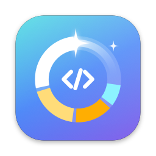

Every build folder, project by project.
node_modules, .next, dist, target, .venv, Pods and more across 15 ecosystems. Folders like dist only count when git ignores them.
DevSweep finds the gigabytes your dev tools leave behind — old node_modules, build folders, caches, simulators, Docker — and clears them without touching your work.
macOS 14 Sonoma or later · Apple silicon and Intel
On the MacBook it was built on, DevSweep found 160 GB to free — 309 node_modules folders, a 9 GB pnpm store, 22 GB of simulators, and three servers still running from a terminal closed days earlier.
How it works
DevSweep walks your projects, caches, simulators and Docker. After the first scan it reads the macOS change log and re-measures only what changed, so rescans take seconds.
Every item gets a clear label: Safe caches, Rebuildable build folders, things to Review like backups — and things it never offers, like .git.
You see each item and its size before anything happens. Everything checks again right before it's removed, and goes to the Trash first.
DevSweep measures what was really freed — not a guess — and keeps a history with how to rebuild anything you removed.
Features
Most cleaners see folders. DevSweep sees projects — when you last touched them, whether git has unsaved work, and whether something is still running inside.
node_modules, .next, dist, target, .venv, Pods and more across 15 ecosystems. Folders like dist only count when git ignores them.
pnpm and APFS share files between folders. A 2.4 GB node_modules that frees 48 MB is shown as exactly that — and DevSweep points you to the pnpm store instead.
Closed the terminal, but port 8010 is still taken? Processes & Ports lists dev servers, MCP servers and model servers, flags the ones left running on their own, and frees a port in one click.
The Storage Map breaks down “System Data” — Library caches, app data, Homebrew, swap, macOS itself — and says what can go, and why.
The sweep command does everything the app does, with a dry run by default. Script it, or check a Mac you SSH into.
npm, pnpm, Yarn, Bun, Homebrew, Gradle, Xcode, Docker and browsers — using each tool’s own clean command where one exists.
Uninstall apps with their caches and settings, and find data left behind by apps you deleted long ago.
Exact copies are matched by content, not name. One copy is always kept.
Safety
A cleaner you can’t trust is worse than a full disk. So DevSweep labels everything honestly, checks again before every delete, and simply never offers some things.
Pure caches. Your tools fetch them again on their own.
npm and pnpm caches · Xcode DerivedData ·.turbo
Comes back with one install or build.
node_modules · .next · target · simulators
Might hold data, so it’s never selected for you.
iPhone backups · Docker volumes · worktrees · your filesNot shown at all, so it can’t be picked by mistake.
.git · .env · source code · macOS
A scan can be hours old. So right before anything is removed, DevSweep looks again — and stops if anything has changed.
web-dashboard/node_modules1.1 GBpackage.json is still there.git and protected folders.git.envsrc/your home folderiCloud DriveDropboxmacOSother people’s files
And nothing leaves your Mac: no accounts, no analytics, no network requests. Read the privacy details

For macOS 14 Sonoma and later, on Apple silicon and Intel Macs.
Prefer to build it yourself? Clone the repository and run:
make installYes. They are rebuilt by your package manager or build tool. DevSweep shows how to rebuild each one, skips projects with something running, and moves everything to the Trash first.
App Store apps run in a sandbox that can’t see other apps’ caches or your project folders, which is exactly what a cleaner needs. So DevSweep is downloaded directly, like most developer tools.
macOS shows that message for apps downloaded outside the App Store that aren’t notarized yet. Clicking Open Anyway once in Privacy & Security lets it run, and it opens normally from then on.
Yes. Processes & Ports shows dev servers, MCP servers and model servers with their ports, marks the ones whose terminal is gone, and stops them — re-checking each one first so it never hits a different program.
Measure folders macOS protects, like Library, Mail, Photos and the Trash. DevSweep reads sizes and names; it doesn’t open your documents or messages.
Yes. It’s a universal app that runs natively on Apple silicon and Intel, on macOS 14 Sonoma or later.
Quit it from the menu bar, move it to the Trash, and delete ~/Library/Application Support/DevSweep. That’s everything it stores.